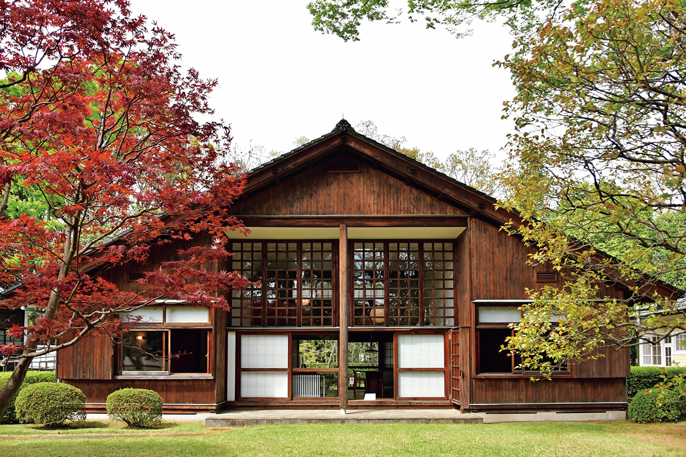
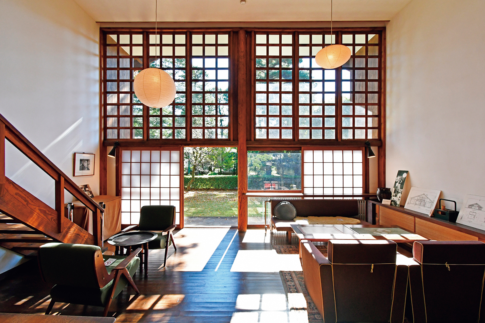
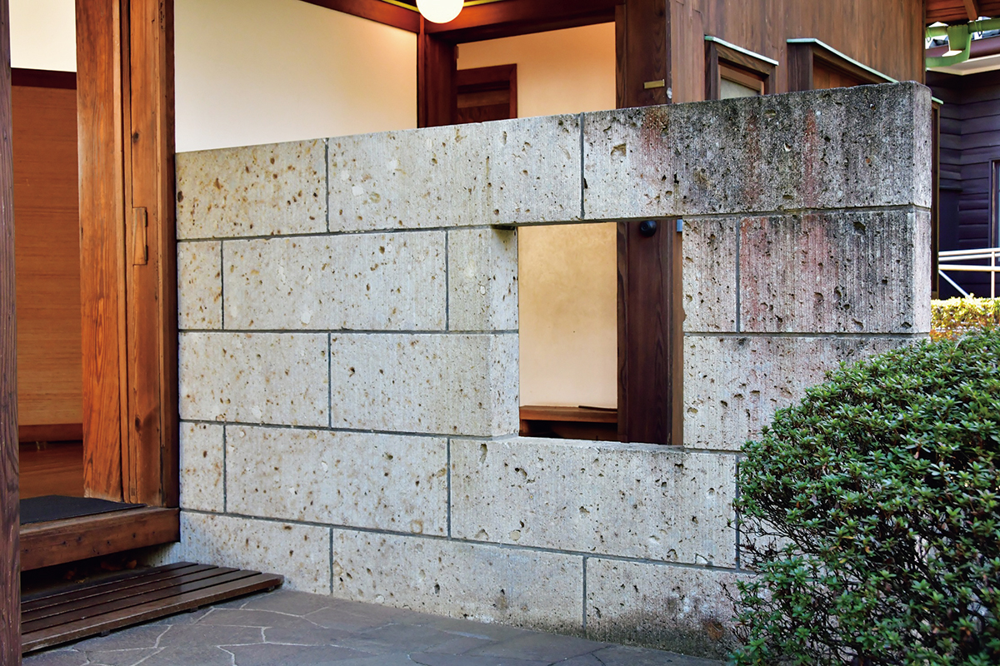

Токио · Коганэй · архитектура
Дом Кунио Маэкавы: как архитектор построил себе модернистский дом в военное время

Что придумывают для удобства великие архитекторы, когда проектируют дом для себя? Кунио Маэкава, ученик Ле Корбюзье и одна из главных фигур японской архитектуры XX века, построил свой дом в годы войны, и в него можно зайти.
Архитектор
Ученик Ле Корбюзье
Кунио Маэкава (1905–1986) окончил Токийский императорский университет и в одиночку уехал во Францию, где первым из японцев стал работать в мастерской Ле Корбюзье. Вернувшись на родину, он работал в токийском бюро Антонина Реймонда, а потом открыл собственное. За полвека практики Маэкава построил множество зданий, прежде всего общественных, и с довоенных лет до послевоенного времени был одним из лидеров японской архитектуры.
Дом
Модернизм внутри японского силуэта
Свой дом Маэкава построил в 1942 году в токийском районе Синагава. Обстоятельства были против него: шла война, строительных материалов не хватало, а закон ограничивал общую площадь жилого дома ста квадратными метрами. Облик дома отвечает духу времени и выглядит традиционно японским: большая двускатная крыша и стены, обшитые вертикальными досками.
Внутри же всё по-другому, и здесь сразу чувствуется модернизм. Самую высокую часть дома занимает гостиная, салон высотой в два этажа. По обе стороны от неё устроены спальня и кабинет с низкими потолками, а на второй этаж в духе лофта ведёт деревянная лестница.

Устройство дома простое и рациональное: салон стоит между спальней и кабинетом. Благодаря двусветному пространству внутри гораздо свободнее, чем можно ожидать по площади застройки.

Судьба
Мастерская, разборка и возвращение
Когда во время бомбардировок Токио сгорело бюро Маэкавы в Гиндзе, его дом какое-то время служил мастерской. В 1973 году дом разобрали, но детали сохранили, и в 1996 году его восстановили из этих деталей. С тех пор дом стоит в музее архитектуры под открытым небом «Эдо-Токио Татэмоно-эн» в городе Коганэй, на западе Токио, и его можно осмотреть. Вход в музей стоил 400 иен в 2026 году.
Музей архитектуры под открытым небом «Эдо-Токио Татэмоно-эн»
- Адрес
- Токио, Коганэй, Сакурамати, 3-7-1
- Телефон
- +81 42-388-3300
- Часы работы
- октябрь–март 9:30–16:30, апрель–сентябрь 9:30–17:30
- Выходные
- понедельник (если понедельник праздничный день, то следующий день)
- Цены / Вход
- 400 иен
- Сайт
- tatemonoen.jp